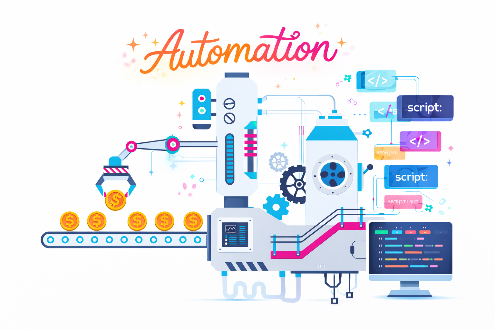

Day 2–3 — Building the First Automation Scripts

After getting OpenClaw running on Day 1, the focus shifted almost immediately. Having the tool installed was one thing, but using it manually through the UI was never the goal. From the beginning, the idea was to build a system where Azure DevOps could act as the control layer and OpenClaw could act as the developer.
Day 2 and Day 3 were where that transition began. This was the point where things moved from simply experimenting with a tool to actually designing a workflow around it.
The first step was figuring out how to pull work from Azure DevOps. Instead of manually reading user stories, I needed a way to query them programmatically. This led me to WIQL, which allowed me to fetch work items directly from the board. With that in place, I now had a way to ask a simple but powerful question: what work should the AI pick up next?
Once I could retrieve work items, the next challenge became how to structure them. Passing raw descriptions into OpenClaw was not enough. I needed to define the problem clearly, include acceptance criteria, and remove ambiguity as much as possible. This led to the introduction of a prompt construction layer, which effectively translates Azure DevOps work items into structured inputs the AI can reason about.
This was an important shift in thinking. Prompts stopped being simple inputs and started becoming interfaces. The way the problem is framed directly impacts the quality of the output.
At the same time, I needed a way to manage state. Without it, the same work item could be picked up repeatedly. I introduced a basic tracking approach to keep track of what had already been processed versus what was new. It was simple, but it solved a critical problem early.
The final piece was figuring out how to actually communicate with OpenClaw programmatically. At this stage, there was no clean integration. It involved experimenting with how to send prompts and capture responses through the control UI. This was not stable yet, but it was enough to start testing the loop.
By the end of Day 3, I had the first version of that loop working. It could query Azure DevOps, pull a work item, build a structured prompt, send it to OpenClaw, and capture the response. It was rough and far from reliable, but it proved that the concept worked.
One of the biggest realizations during this phase was how important input quality is. The clearer and more structured the prompt, the better the reasoning and output from the agent. This reinforced something I had already seen in my day-to-day work: well-defined requirements lead to better outcomes, whether you are working with developers or AI.
Another realization was that OpenClaw does not provide a ready-made workflow. There is no built-in Azure DevOps integration or execution pipeline. Everything around it needs to be designed and built. While this adds complexity, it also means the system can be shaped exactly how I want it to behave.
By the end of Day 3, it was clear that this was no longer about writing a few scripts. This was the beginning of building an AI-driven development workflow. And workflows require structure, state management, and feedback loops to function properly.
The next step is to make this loop reliable. Right now it works, but only under ideal conditions. The focus moving forward will be stabilizing communication with OpenClaw, handling failures, and ensuring outputs can consistently be fed back into Azure DevOps.